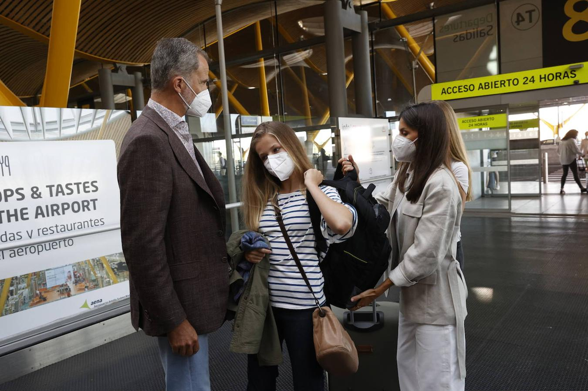

PONGO LA LAVADORA A LAS 12 DE LA NOCHE.
me han subido el iva del internet y ni me había enterado.
el aceite cada día más caro, este último mes ha sido brutal
no puedo permitirme tener una mujer e hijos

tengo miedo de acabar con una mujer que acabe arruinándome la vida
el iva de las mascarillas nunca bajó del 21%, mientras las suscripciones a los periódicos digitales españoles gozan de un iva súperreducido
Posted On: 2021-08-31T00:00:00
Posted By: MAESE PELMA
'me han subido el precio de la depilación eléctrica de chichi por la subida de la luz'
Posted On: 2021-08-31T00:00:00
Posted By: tunante
sabéis que pagamos impuestos por lavar los platos?
el detergente y el agua llevan iva, o sea, impuestos.el gobierno nos cobra hasta por lavar los platos.
Posted On: 2021-08-31T00:00:00
Posted By: MAESE PELMA
Si soy tu vecino de abajo o de lado juraría venganza
Posted On: 2021-08-31T00:00:00
Posted By: Ancient Warrior
MAESE PELMA dijo: sabéis que pagamos impuestos por lavar los platos?el detergente y el agua llevan iva, o sea, impuestos.el gobierno nos cobra hasta por lavar los platos.
Pagas impuestos por todo menos por tirarte pedos y ya están en ello con la agenda 2030.
Posted On: 2021-08-31T00:00:00
Posted By: tunante
cómo podemos vivir así?es decir, alimentando con nuestro sufrimiento a una casta de vividores parásitos?
pagamos impuestos por todo: por comer, por dormir, por follar (si usas preservativos)...
cada vez que hacemos algo el gobierno, el monstruo, es alimentado y un pedro sánchez se va de vacaciones en falcon.
¿cómo hemos llegado aquí?
es increíble.de 100 euros que te gastas en el súper, 20 son impuestos.vas con 100 euros, te comes 80 y 20 van a chochocharlas y a pelis de almodóvar.
no soy consumidor de chochocharlas ni de pelis de almodóvar, no quiero esto.
¿para qué quiero un felipe vi?pongo mi lavadora a las 12 de la noche.
Posted On: 2021-08-31T00:00:00
Posted By: MAESE PELMA
MAESE PELMA dijo: cómo podemos vivir así?es decir, alimentando con nuestro sufrimiento a una casta de vividores parásitos?pagamos impuestos por todo: por comer, por dormir, por follar (si usas preservativos)... cada vez que hacemos algo el gobierno, el monstruo, es alimentado y un pedro sánchez se va de vacaciones en falcon.¿cómo hemos llegado aquí?es increíble.de 100 euros que te gastas en el súper, 20 son impuestos.vas con 100 euros, te comes 80 y 20 van a chochocharlas y a pelis de almodóvar.no soy consumidor de chochocharlas ni de pelis de almodóvar, no quiero esto.¿para qué quiero un felipe vi?pongo mi lavadora a las 12 de la noche.Hacer clic para expandir...
Te voy a explicar sencillo el cómo hemos llegado hasta aquí:
Posted On: 2021-08-31T00:00:00
Posted By: tunante
Con todo lo malo que son los impuestos, al menos se tiene recaudar para luego poder gastar.
Pero si no llega con lo recaudado para todo lo que se quiere gastar si o si, entonces se apunta a deuda.
Como la deuda es impagable hoy (en dinero) se paga con otra cosa mañana (condiciones de vida).
Y con eso amigos, hemos descubierto que hay una cosa peor que los impuestos.
Posted On: 2021-08-31T00:00:00
Posted By: Rescatador
estoy harto.
Posted On: 2021-08-31T00:00:00
Posted By: MAESE PELMA
El regimen ha conseguido que los borbones sean el menor de los problemas (en el fondo ni siquiera es una monarquia, simplemente son franceses fornicando con una perjura 'la reina' que dice ser republicana)
Y el gobierno lo ha votado la gente toca recordarlo... (no digo el echar al mierda de Rajao sino lo de luego)
Para que luego digan que la democracia (vamos permitir a todo el mundo votar) no sale caro... y en parte me alegro a ver si así algunos se les quita ciertas tonterias de golpe (a pesar de que vivo en el extranjero pero no lo digo por malicia sino por quitarse las tonterias y bajar al mundo real)
Posted On: 2021-08-31T00:00:00
Posted By: ashe
No te metas cosas electricas por el culo.
Posted On: 2021-08-31T00:00:00
Posted By: CharlesBPayaso
Nuevo récord del precio de la luz, que triplica a lo que costaba hace un año
LuzPrecioRecordTriplica
Fuente fotografía: OK DIARIO
ç
Se pulveriza uno tras otro.El precio de la luz está totalmente descontrolado.La media de hoy estará en los 124,45 euros el megavatio/hora, triplica de sobra los parámetros del último lunes de agosto del año pasado en que el MW/h estaba en 43,7 euros, supone una subida del 24,76% respecto al registrado hace una semana, el lunes 23 de agosto (99,76 euros/MWh), y del 21,97% con relación al precio de este domingo.Y hay picos muy altos, alguno llega a 132,92 euros.Así ha ocurrido a las 9 de la mañana y se repetirá a las 9 de la noche.Este precio repercute en un 24% en el recibo de quienes tienen mercado regulado, alrededor de 10 millones de consumidores, y será la factura más cara de la historia.Ya se calcula que pagaran unos 30 euros más a final de mes.La luz más cara de europa
Posted On: 2021-08-31T00:00:00
Posted By: Triyuga
No lleva mascarilla, guau...
Posted On: 2021-08-31T00:00:00
Posted By: VOX o DERROICIÓN
Los impuestos son para hacer hospitales y carreteras, me lo dijeron en la egb
Posted On: 2021-08-31T00:00:00
Posted By: politicodemadreputa
Posted On: 2021-08-31T00:00:00
Posted By: rejon
Content Date: 2021-08-31
Download Date: 2021-09-09
Document ID: L0C04G24W